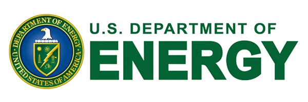
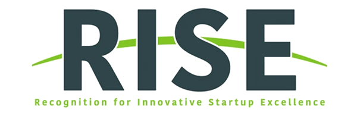

電價費率持續飆升
尖峰需量附加費與電費調漲，使提升能源營運效益成為企業財務與經營的重要課題。
LATCHES™
尖峰需量附加費與電費調漲，使提升能源營運效益成為企業財務與經營的重要課題。

老舊或調校不良的空調 (HVAC) 系統顯著推升電費支出、營運風險及室內舒適度抱怨。

企業與機構亟需具體且可量化的減碳數據，以滿足永續揭露、法規合規與綠色投資決策。

現場團隊需將龐雜的建築數據轉化為明確、高投資回報且易於執行的工程改造範疇與計畫。
從立即可執行的實證基準能耗診斷與統包節能工程，到面向未來的零佔地主動式熱能儲能。
每一項建築節能計畫皆始於實證數據。我們先進的診斷技術能精準辨識既有耗損，量身規劃高回報率的節能改善措施 (ECMs)，並媒合嚴選在地專業工班完成驗收，確保實質節能成效。

將既有輕鋼架天花板上方的閒置空間轉化為主動式熱能電池。LATCHES™ 能在高電價的尖峰時段釋放冷能緩衝，大幅平抑契約尖峰需量，且無需犧牲任何一平方公尺的寶貴室內租賃坪數。





專業能源診斷能確立精確的能耗基準線並辨識關鍵減碳契機。未來結合 LATCHES™ 尖峰負載轉移技術，更能產生經由實測驗證的營運數據，協助企業在編撰 ESG 永續報告書、地方政府法規審查及爭取能源補助時提供具體佐證。
具體量測邊界、驗證機制、申報規範與補助申請條件將依各建築物型態與當地法規標準客製化執行。